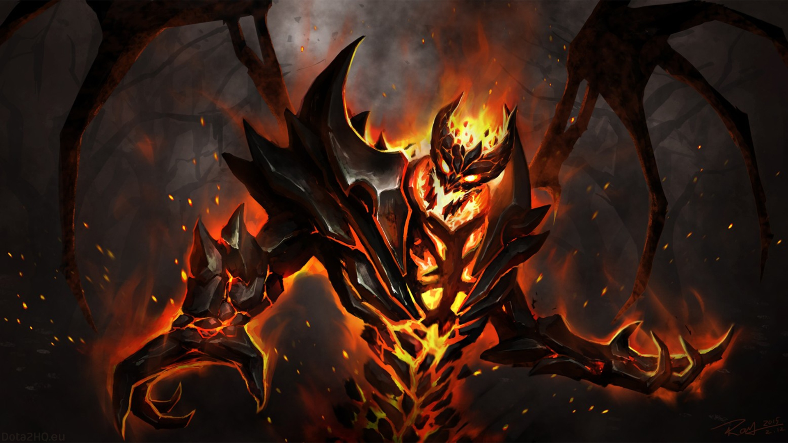

Shadow Fiend
Кажуть, у Невермора душа поета, але насправді має тисячі. Повіками він поглинав душі поетів, священиків, імператорів, жебраків, рабів, філософів, злочинців і, звісно, героїв. Не втекти від нього ні душі. Ніхто не знає, що він із ними робить. Ніхто не вдивлявся в Безодню, де серед астральних скель Невермор таїться, мов змія. Чи пожирає він душі одну за одною? Чи виставляє їх трофеями в коридорах зловісного храму? Чи маринує в чорнокнижному розсолі? А може, він лише маріонетка, якою лялькововодить зловісний розум ззовні простору? Таке його зло, настільки сильний його темний дух, що його розумом не зрозуміти. А якщо вам все ж таки дуже хочеться дізнатися, що він робить з душами, то все просто: приєднуйтесь до його колекції. Або просто зачекайте: Невермор уже йде до вас.
